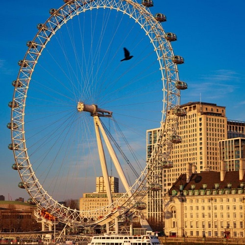

歴史ツアー
日帰りツアー
1日目

ウェストミンスター寺院は、英国ロンドンのウェストミンスターにある英国国教会です。 聖ペテロ修道院教会。 戴冠式などの王族の儀式がここで行われ、内壁や床には歴代の国王や王妃、政治家が多数埋葬されています。
1泊2日ツアー
1日目
ウェストミンスター寺院は、英国ロンドンのウェストミンスターにある英国国教会です。 聖ペテロ修道院教会。 戴冠式などの王族の儀式がここで行われ、内壁や床には歴代の国王や王妃、政治家が多数埋葬されています。
2日目

ロンドン アイは、イギリスのロンドンにある観覧車で、テムズ川沿いのサウス バンク (ランベス) のジュビリー ガーデンにあります。 隣接する敷地はカウンティ ホールで、ウェストミンスターの対岸に位置する国防省に面しています。